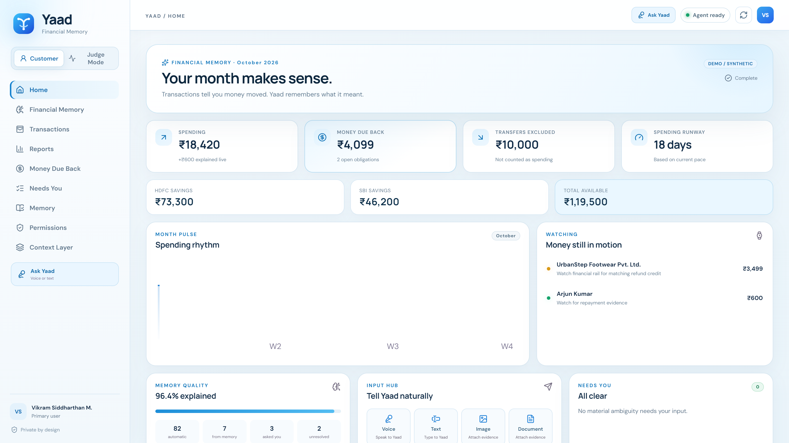

Product proof
Money still in motion stays visible.
Yaad does not close an obligation because a parcel moved or a person promised repayment. It waits for financial evidence.
Money Due Back · persistent state

Transactions tell you money moved. Yaad remembers what it meant. It separates spending from transfers, keeps money due back open, and asks only when missing context materially changes the answer.

Our Round 1 research showed that people already have transaction records; the friction is remembering what those movements meant and maintaining another tracking system. The sample was young-skewed—29 of 35 respondents were aged 18–24—so these figures describe our sample, not all of India.
A bank transaction is an event. Spending is an interpretation. A receivable or expected refund is persistent state. Yaad connects those pieces without turning every payment into another chore.
Not spending. Yaad recognises an owned-account transfer and excludes it automatically.
₹600 spent. ₹600 still due back. One clarification creates the correct economic meaning.
Still open. Yaad keeps watching until matching financial settlement evidence actually appears.
Age is the recruitment proxy; the real behavioural segment is high digital-payment frequency, repeated context loss, shared-money activity and low tolerance for manual bookkeeping.
Many small digital payments, checks balances, but does not maintain a tracker consistently.
Aha: “Explain my month automatically.”Frequently pays for friends, roommates or colleagues and mixes consumption with receivables.
Aha: “Show what is actually mine.”Moves money across accounts, receives refunds and wants those states reconciled without manual categorisation.
Aha: “Don’t call movement spending.”Yaad does not close an obligation because a parcel moved or a person promised repayment. It waits for financial evidence.
This is our strategic inference from PhonePe’s public consumer-payment position—not a claim about its internal roadmap. Yaad is strongest where payment activity already happens frequently enough for meaning to compound into memory.
At launch, the core should be free and earn its place through retention and relationship depth. Premium household / cross-account memory and advanced automation can be tested later; the core should not become an advertising engine.
The goal is to prove that Financial Memory removes work and earns trust before scaling distribution.
Stress-test semantic errors, trust and correction burden.
“Can you remember what these three payments were for?” → “Let Yaad remember your month.”
Campus-to-first-job, co-living and young-professional communities where shared expenses are dense.
Money Due Back, shared-expense and refund interactions create useful invitations to counterparties.
Month Memory shows what was understood, what Yaad learned and what remains unresolved.
The metric rewards what Yaad is meant to do: understand correctly while reducing maintenance, not maximise conversations.
Join the pilot for a Financial Memory that removes transfers from spending, keeps money due back visible, and asks only when it genuinely needs you.